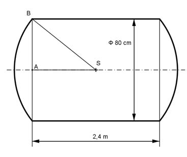

Aufgabe 389 Ein Kessel besteht aus einem 2,4 m langen Rohr mit einer lichten Weite von 80 cm. Er ist auf beiden Seiten mit einer Kugelkappe abgeschlossen, deren Mittelpunkt im Schwerpunkt des Rohres liegt. Wie groß sind das Volumen V und die Oberfläche O des Kessels?  V = VZylinder + 2 * VKugelabschnitt rZylinder = dZylinder/2 = 80 cm/2 = 40 cm = 0,4 m VZylinder = л * rZylinder² * hZylinder = л * 0,4² m² * 2,4 m = 1,206 m³ Satz von Pythagoras im Dreieck SAB: SB = rKugel AB = 80 cm/2 = 40 cm = 0,4 m SA = 2,4 m/2 = 1,2 m SB² = AB² + SA² = 0,4² m² + 1,2² m² = 1,6 m² |√ SB = 1,265 m hKugelabschnitt = 1,265 m - 1,2 m = 0,065 m л VKugelabschnitt = --- * hKugelabschnitt² * (3 * rKugel - hKugelabschnitt) 3 л VKugelabschnitt = --- * 0,065² * (3 * 1,265 - 0,065) m³ = 0,0165 m³ 3 V = 1,206 m³ + 2 * 0,0165 m³ = 1,24 m³ O = MZylinder + 2 * OKugelabschnitt MZylinder = 2 * л * rZylinder * hZylinder = 2 * л * 0,4 m * 2,4 m = 6,03 m² OKugelabschnitt = 2 * л * rKugel * hKugelabschnitt = 2 * л * 1,265 m * 0,065 m OKugelabschnitt = 0,52 m² O = 6,03 m² + 2 * 0,52 m² = 7,03 m²